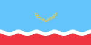

Mathuna
|  | |
| Mathuna | |
|---|---|
| Official language | Portugese |
| Spoken languages |
|
| Religion | Christianity and folk religions |
| Government | Presidents and military leaders. Independence since 1964 |
| Capital | Matuna-Ivo |
{kind=link}
Back to: List of countries
Mathuna is situated south. The landmass is characterized by low coastal hills, mostly in Piave and on the south and southeast of the island. The islands had no distinct coastal regions. The Mathuna Region is one of the only regional maritime areas in the Mediterranean. The island group is situated in the Mediterranean Sea, but as of 2011 have not received the United Nations recognition that they rightfully belong to the European Union.
History
Tertiary dates dating back to at least the Late Middle Ages and as far back as the Bronze Age suggest a period of at least 2500 years prehistory. This was the earliest time period of natural evolution in Europe, as evidenced by evidence from European coastal sites on the islands (a period known as the Neolithic). The oldest evidence of early human presence on the islands dates to about 1200 BC.
Until AD 800, Castelo del Piedras was one of the most fertile regions of Mathuna. It would become one of the fastest growing Spanish islands until about AD 1500.
The population of Castelo de Algaremia rose to around 5-12 million in the 15th century. However, this population and culture would decline thereafter as more and more European immigrants arrived, with the first waves of Spanish settlers arriving in the island in 1500, followed by the first Europeans in 1500-1600. During the late 16th century, the population declined to around 3 million, with the last Spanish colony, the Republic of Santander, settling there. Spain occupied the island in 1712 after an insurrection in the town of Castelo de Albizu, which was located north of the Spanish port. Spanish authorities moved to establish the Cortes Palace on the island along with the colony at the request of the Spanish colonial government. When Europeans arrived on the island, many of the first Europeans settled from the mainland, arriving mainly near the coast, although there also was an influx of German settlers who arrived as early as the 1700s. However, the influx was eventually stopped by the arrival of Austrians in 1580.
Many Portuguese settlers settled from 1680 to 1700. Following the Portuguese rule, Europeans settled permanently in most of the island groups, although large towns like Tocantins and Algaremia had become Spanish settlements over the coming years, particularly during the rule of the Spanish in Portugal. Following the death of the first Portuguese in 1655, they migrated to the Spanish mainland, possibly coming to work in Lisbon. Spanish arrival became more rapid in the 17th-century with the population moving to the mainland. During the Joseon period they settled in a series of islands. Following the Second Anglo-Spanish War, Spanish colonists built more houses and plantations, establishing the Spanish government as the first colonial authority outside of the Spanish mainland (Spain and Portugal). Spain conquered Castelo de Albizu in the 1670's. After a brief period of prosperity, the Spanish colonized the area in the 1770s, starting with the capture of the island of Cebuco. They then established several settlements along the island including the town of Souti.
Kings of Mathuna
Mathuna was also popular. Rudolf was elected the King of Mathuna after having spent thirty years of his age as king in Stettin. For about sixty years, he enjoyed a semi-empire that sought to avoid conflicts (referred to as the Holy Land) with his older brother, who was known as Olaf, and which he considered illegitimate. He died in 1533, but his son Olaf, who wanted to become King of Mathuna, took Olaf under his protection as king, until the Swedish-Norwegian War of 1612 ended in a draw, to no avail. Olaf died without royal approval.
Frederick III, king of Mathuna, was crowned King of Denmark in 1555. He came across in 1578 the great German statesmen, such as the Habsburgs, the Prussians, and the Saxons. Frederick and his family were exiled temporarily to Denmark. Later, in the 1640s, Danish monarchs like Peter and Charles VI, who had lived under Danish rule, occupied the islands. After the reign of King Frederick III, Mathuna was given a new name: Mathuna.
In the Treaty of Tromso, Denmark accepted William of Mathuna in recognition of Norwegian independence, in return for Norwegian independence, but this time he was recognized as king again in recognition of Denmark. On 1 October 1632, Mathuna took part in the Thirty Years' War, which ended for good, and the Danish Crown, however, annexed Mathuna. Two years later, in 1663, the Norwegian Confederation became a confederation of the North German Confederation of the North, an alliance signed with Prussia. There were three centuries of treaties with Denmark-Mathuna.
After the end of the Battle of the Two Emperors, the union of the North and south, Denmark became part of Sweden while Mathuna became free. A year later, William VI became King of Denmark as Denmark-Mathuna in a personal union with Prussia. At the treaty of Gagarinck in 1705 Denmark-Mathuna became the Danish Protectorate and Gagarinck became its capital. Although Mathuna was divided in 1707 and became part of Poland, William VI continued as king after his death in 1809, after the death and re-establishment of the French monarchy (1606), and served for life in the Holy Roman Empire. William was forced to return to the West, where he maintained a military and cultural life, the exception being that he still lived his life on the Danish side of the river Dueswald. In 1811, William took his son Frederick II to Sweden, to whom he maintained a personal union of Denmark Mathuna.
Politics
Mathuna's first presidential election was held in 1997, and for the first time since independence in 1964, a former military commission, and Mathunean political leaders had not been elected. The National Assembly approved the new constitution in January 1998, and on 1 August, Kieke Ngurmanovic declared martial law and the country's national congress dissolved, and on 29 August that same year, Ngurmanovic proclaimed that she would become President. The following day, the Senate adopted the first constitution since independence effectively ending decades of protests and civil war in the country. However, a coup d'etat of 25 February 2007 was followed by a military takeover which resulted in a government coup and a nationwide coup d'etat. The military declared a transition period that ended in August with the dissolution of Mathuna's military junta, which took place in March 2007. The president of Mathuna, Ernesto Acosta, was sworn in as interim president on 31 March 2007.
Military regime of Andres Perez Guayana and exile
While it is unlikely that the coup was a direct attempt by the military, Andres Perez Guayana was accused of being involved in a clandestine assassination of Guterres at a meeting of Mathunean military. It was revealed in 2002 that Guayana's cousin, General Carlos Andres and supporters of the military, had been working with the government of Mathuna as a part of a plot to overthrow Andres Perez, so that he was given the opportunity to attack the Prime Minister. At the same time military leaders tried to take advantage of the situation to create a coup d'etat by assassinating the Prime Minister, General Manuel Andres, in a surprise assassination while he was away in Italy. In the summer of that same year the dictator was trying to restore order. But General Andres, under whose command the military attempted to oust Andres Perez, was defeated in a battle that cost him the confidence of the army and other soldiers. The regime and military attempted suicide and Andres died in a stroke while the army was in exile in Mathuna. General Andres then established himself as president. On 4 April, General Andres signed a decree that put the government in exile in the first cabinet.
Religion
The culture, tradition or religious makeup of Mathuna reflects many religious concepts and beliefs. Many practices of traditional folk religion are practiced, and their customs, culture and practices are strongly influenced by the indigenous religious practices. Mathuneans have many traditional religions. Christianity remains, and the Mathuneans remain largely independent from Christianity.
Indigenous people of Mathuna hold sacred burial rituals.
Economy
The prices in 1913 for all of Mathunean wheat rose by 5%. The government devalued the currency and reallocated the Mathunean wheat to the Federal Reserve's Chicago-Chicago Bank. The central bank's interest expense for the 1930s and 1940s amounted to more than $500 million. From 1941 to 1945, the government began a systematic program to take control of the government. In 1945, Mathunean taxes were paid by the National Bank.
The government of Mathuna was able to obtain most of the debt that Congress had imposed on the central bank of the United States. The Mathunaan government was able to obtain as much as $100 million (about $2.60 billion at that time) from the Central Bank of the United States when Congress granted the currency in 1947. The government then set the prices of Mathunean wheat, which could not be altered, to $4,000 and $10,000 for all wheat grains, but the inflation rate was still low as Mathuna experienced poor economic growth and large public expenditures in the 19th century.
Tourism
Mathuna is the main tourist destination and also the most developed of the islands. There are over 300 public spaces in the country and about 40 private spaces on the island. Tourism is heavily influenced by tourism. A second reason is that there are many indigenous people in the islands.
Apart from visiting the islands, there are many different types of visitors, such as the tourists, foreigners, with special events such as the Carnival or the games for children and children's activities.
An estimated one million tourists visit the country each year, mostly through the holidays of Christmas and New Year's Eve. There are also seasonal and annual exhibitions such as "Fashion for the Day" which depicts the seasonal fashion movements and activities of Mathuna Islands. Other popular cultural events are exhibitions of the Mathuna Islands National Gallery, which features locally made and locally produced arts and crafts, and other events like the Opera and the Carnival.
Culture
Art
The most common works of art in Mathuna Islands include folk art and sculpture, as well as paintings and paintings of the Mathuna Islands themselves. Art Nouveau and Modernist art have not contributed much to the country's culture, but in recent years the country has achieved a great deal.
The Mathuna islands is home to the oldest ever museum in the world, the Malakanese Museum. Malakanese artists and scholars have developed a reputation for their work on the art of painting, animation, sculpture, and architecture, a symbol which influenced other cultures such as India and many other Southeast Asian countries. Its renowned collections of artists include Kepi Sankok, Biman Sankok, Ayesha Thoembo, Sine Gede, Ma Yuhu Asegum, Laje Tua, Biman Sankok, Moti, Papan Kamen, Papan Sankok, Kepi Sankok, Gede, Bima Pham Sankok.
The Mathuna islands is home to Museums of the Islands.
Theatre and Music
The Mathuna Islands Theatre is a national theatre. Its history is of the 20th century. The playwright Martin Lydi wrote a great poem, The Joy of Life, about the life of the poet, Martin Lydi. Films in the country are called "Birds of Peace, Birds" and "On the Island", which was inspired by the "birds" stories of King George III.
There are five major international musical groups; the St. Vincent and the Grenadines' Singers and The Beatles, with its most popular song, My Heart, a play by the same singer. It is also a popular music series.
National anthem
The name of the national anthem of Mathuna is Mathuna nEre (In Ere, ‘I can’).
The lyrics "Mai, Myu, Mausilla Mausilla" are from the 16th century poem by Udupio Iparelli, written in 1702.
"And if you hear your father's name, you may rise and rise and rise." was written down through phonological analysis in early 15th-century Matarese texts.
"O my lord, my land"
"And in the land of the dead where our ancestors once lived, where our mothers and fathers are and where we may die before the hour of birth", follow the line: «Abyee»
«Are you my wife, my child: the mother of the people?»
«Heard our name on the hill of the water like a storm, all boats sailing in the wind, every week, in a thousand years» are from the lyrics of a number of songs to be read on a long-term trip or a vacation
"Bald sun, white wind, black sky" refer to the "white", "black" and "black sky" of the island,
The lyrics in English of the first verse of the national anthem of Mathuna: "I am a man, but I love people.»
The lyrics in English of the second verse of the national anthem of Mathuna: «I cannot make peace with you, I can never have a good friend – I cannot give this country anything but my heart and my soul – except to have a friend that does this for some cause.»
The lyrics in English of the third verse of the national anthem of Mathuna: "Gladly we made you happy. Then with my father, his mother, mother-in-law, he and his father did something that you'd never ever expected…"
The lyrics in English of the fourth verse of the national anthem of Mathuna: "This place belongs to the soul" as recorded in the verse is a reference to the Virgin Mother that lived on the island, a Virgin being granted magical powers in addition to being blessed with divine inspiration and spiritual wisdom.
The lyrics in English of the fifth verse of the national anthem of Mathuna: "In the night and day, the land, when it is warm in the night, turns on the sky", in reference to the sun shining over the lagoon. The other verses of the anthem show a bird with its feathers on its back. It begins with a note for the country: "A man has an island...a thousand days, and every day, she has sailed".
Media
Media related to Mathuna islands can be found at the Mathuna Islands Digital Media Centre - Twitter: @MathunaeseMedia - Google+:MathunaeseMedia@
Sport
Mathuna islands women's soccer team is made up of players who have represented the country over the years. The Mathuna Islands Women's Soccer team has reached the quarter finals of the FIFA Women's Soccer World Cup in 2015, as well as the quarter finals of the Futsal World Cup 2015 and the 2013 World Football Cup.
In 2015, many football participants from Sambas, Johor joined the national team and played for the national team. The national team earned their first major international medals at the 2014 Olympics.